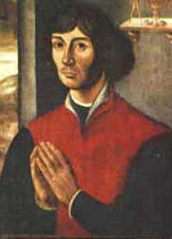

Galileo Galilei was a lucky astronomer. He was fortunate to be alive when the telescope was invented, and created his own. This gave him absolutely unprecedented access to information on the heavens – and he was the first to capitalize on it. Galilei turned his telescope to the sky and discovered secrets that had lay waiting for millennia. Because Galileo lived and worked at such an opportune time, he is considered by most to be the father of modern observational astronomy. Many aspects of his life lend themselves to this title. He was the first to lay eyes on the Rings of Saturn, and he also discovered and named various moons of Jupiter. He was the first to observe sunspots, which was rather significant, because it was then believed by the church that the sun was perfect and without blemishes of any kind. Probably what Galileo is most well known for is his staunch defense of the idea of a heliocentric solar system, regardless of the religious persecution he was subjected to. Unlike Copernicus, he was able to provide hard evidence for the fact. Despite Galilei’s evidence, the church still argued that the sun orbited the Earth. Galileo was eventually placed under house arrest for his views, and lived out the last eight years of his life in his villa near Florence.
Hipparchus, an astronomer from ancient Greece, is widely believed to be the greatest astronomer of antiquity. He can be viewed as a sort of founding father of astronomy. His most important contribution to the field was the first known star catalogue, which historians think he was inspired to construct after viewing a supernova. His other contributions include important findings on the positions and motions of the moon and Sun. Using trigonometry, he was able to measure the distance to the moon during a solar eclipse. He is also known for creating the method by which a star’s brightness is measured, a system still in use today.
Edwin Hubble is credited with discovering galaxies outside of our own. Although the race to solve this mystery had contributions from many different scientists, it was Hubble’s observations through the Hooker telescope that proved to the scientific community that there was more to outer space than the Milky Way. With one finding, Hubble ballooned the Universe from a galaxy of about a hundred thousand light years across, with approximately one hundred billion stars, to an indefinite expanse of intergalactic space, billions of light years across, and with a seemingly infinite amount of stars. However, Hubble didn’t stop there. He showed that these separate galaxies were moving away from each other by observing their redshifts, an effect caused by light being stretched out over vast distances. His observations led him to the discovery that the farther away a galaxy was from the Milky Way, the faster it was moving away from us. This is known as Hubble’s Law.
Kepler was a German astronomer and was the first to fully explain the motion of the planets of our solar system. He described their motion with three laws. What allowed him to unlock the mystery was to imagine the planets as having elliptical orbits rather than circular ones. In fact, his first law of planetary motion is the simple statement that planets travel in ellipses. Like Copernicus, Kepler firmly believed in a heliocentric solar system. However, the church was still very opposed to the idea when he was alive. Despite this, Kepler championed the idea like no other astronomer had and brought it to the forefront of the scientific revolution.
William Herschel was an English astronomer born in Germany. A fascinating side-note to his astronomical career was the fact that he built his own reflecting telescopes. He used them to observe binary systems of stars, in which two stars orbit around a common center of gravity in a bound system. Herschel is credited with discovering over eight hundred of these binary systems. However, his massive observational output didn’t stop there – Herschel also discovered over twenty-four hundred deep sky objects that he termed nebulae. His observations led him to the discoveries of the planet Uranus, two of its moons, and two moons of Saturn. He was the first to realize that the solar system was moving through space, and was able to estimate as to the direction of the movement. He also discovered infrared radiation.
Copernicus was a European scientist. He is credited as the first astronomer to put forward a comprehensive heliocentric version of the solar system. The idea that the Earth revolved around the sun went directly against the teachings of the church, and this publication was in a time when the church controlled most of society. Although Copernicus died in the year of his great work’s publication, he still no doubt feared persecution from religious authorities and realized that even after death his name and the reputation of his work could be sullied. For his courageous introduction of the true nature of the solar system to European scholars he is remembered as a monument to the truth in a society largely unwilling to accept it.
Arno Penzias and Robert Wilson come in one package. They discovered Cosmic Microwave Background Radiation. The CMB was an aftershock of the explosive birth of the Big Bang. As they experimented on a telescope, they realized they had an ever-present background radiation in their data, and after cleaning their equipment of pigeon droppings, they deduced that the radiation was not coming from anywhere on Earth but outside the Milky Way. It wasn’t until later that the two realized that their discovery had any significance, when it dawned on them that they had discovered the elusive aftershock of the Big Bang. The main opposing theory, known as the Steady State theory, was virtually abandoned by astronomers following the momentous discovery. Some important outcomes of the discovery include evidence for the inflationary model of the universe, the suggestion of a Dark Age of the Universe, advancements in interferometry and countless other repercussions in the astronomical field.
Tycho Brahe was a famed Danish astronomer. He catalogued hundreds of objects. Brahe is probably best known for his work with new stars, or novae, which in his day was cutting-edge astronomy. In 1572, he observed a bright star that appeared to be a newcomer onto the celestial scene. While some argued that this was an atmospheric phenomenon, Brahe showed through use of parallax that the object was much too far away to be inside the Earth’s atmosphere. Although other supernova events had been observed in the past, Brahe was the first to scientifically observe and acknowledge one.
Ptolemy was an Egyptian astronomer, geographer and mathematician of Greek ancestry. He was the last great astronomer before the known world’s descent into the Dark Ages. He is important for preserving the Greek astronomer Hipparchus’ star catalogue, which he included in his astronomical magnum opus, Amalgest. The Amalgest was the most important astronomical text in existence for close to fifteen hundred years after the death of Ptolemy, and because of this, its author gained a near legendary status. He also included in his work a set of tables, which made it much easier to calculate the positions of the planets, the sun and the moon, the rising and setting of the stars, and the dates of lunar and solar eclipses.
Charles Messier was a French astronomer. His search for comets ended up leading him to create one of the most famous catalogues of deep sky objects. He realized these deep sky objects could distract other comet-chasers, and so he decided to distinguish them as immobile objects in the night sky. Along with being among the first to catalogue these wonderful objects, Messier was also successful in discovering thirteen comets.
Back to main page.